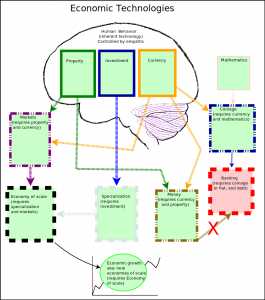
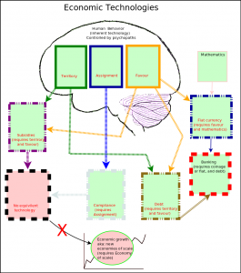

<?xml version="1.0" encoding="UTF-8"?>
<rss version="2.0"
	xmlns:content="http://purl.org/rss/1.0/modules/content/"
	xmlns:wfw="http://wellformedweb.org/CommentAPI/"
	xmlns:dc="http://purl.org/dc/elements/1.1/"
	xmlns:atom="http://www.w3.org/2005/Atom"
	xmlns:sy="http://purl.org/rss/1.0/modules/syndication/"
	xmlns:slash="http://purl.org/rss/1.0/modules/slash/"
	>

<channel>
	<title>The Civilization Gene &#187; trust</title>
	<atom:link href="http://civgene.matthewnewhall.com/archives/category/empaths/trust/feed" rel="self" type="application/rss+xml" />
	<link>http://civgene.matthewnewhall.com</link>
	<description>Civilization is the Logic of Compassion</description>
	<lastBuildDate>Sun, 26 Mar 2017 00:26:19 +0000</lastBuildDate>
	<language>en-US</language>
	<sy:updatePeriod>hourly</sy:updatePeriod>
	<sy:updateFrequency>1</sy:updateFrequency>
	<generator>http://wordpress.org/?v=3.6.1</generator>
		<item>
		<title>Civgene can provide objective morality</title>
		<link>http://civgene.matthewnewhall.com/archives/1429</link>
		<comments>http://civgene.matthewnewhall.com/archives/1429#comments</comments>
		<pubDate>Wed, 22 Mar 2017 03:48:51 +0000</pubDate>
		<dc:creator>Matthew Newhall</dc:creator>
				<category><![CDATA[ASPD]]></category>
		<category><![CDATA[civilization gene]]></category>
		<category><![CDATA[collapse]]></category>
		<category><![CDATA[compound emotions]]></category>
		<category><![CDATA[conscience]]></category>
		<category><![CDATA[cult]]></category>
		<category><![CDATA[defense against a psychopath]]></category>
		<category><![CDATA[defense against psychopaths]]></category>
		<category><![CDATA[Distribution Party]]></category>
		<category><![CDATA[EMPATHS]]></category>
		<category><![CDATA[faith]]></category>
		<category><![CDATA[genetics]]></category>
		<category><![CDATA[imagination]]></category>
		<category><![CDATA[legal complexity]]></category>
		<category><![CDATA[logic]]></category>
		<category><![CDATA[metamind]]></category>
		<category><![CDATA[MRI]]></category>
		<category><![CDATA[multiple personality disorder]]></category>
		<category><![CDATA[narcissist]]></category>
		<category><![CDATA[PSYCHOLOGY]]></category>
		<category><![CDATA[PSYCHOPATHS]]></category>
		<category><![CDATA[reason]]></category>
		<category><![CDATA[religion]]></category>
		<category><![CDATA[science]]></category>
		<category><![CDATA[SOCIETY]]></category>
		<category><![CDATA[sociopath]]></category>
		<category><![CDATA[study]]></category>
		<category><![CDATA[subconscious]]></category>
		<category><![CDATA[trust]]></category>
		<category><![CDATA[Type One Civilization]]></category>
		<category><![CDATA[wants abilities limits]]></category>

		<guid isPermaLink="false">http://civgene.matthewnewhall.com/?p=1429</guid>
		<description><![CDATA[&#160; &#160; Video explaining how you can derive objective morality from civgene. You can use behaviours unique to empaths to derive objective morality from science itself.  Non-psychopathic behaviours are like atoms which in turn can be used to build rights, much like molecules. More to come. Edit 3/25:  Updated video.  Clearer and more concise edits [&#8230;]]]></description>
				<content:encoded><![CDATA[<div class="simplesocialbuttons">
<div class="simplesocialbutton ssb-button-googleplus"><!-- Google Plus One--><div class="g-plusone" data-size="medium" data-href="http://civgene.matthewnewhall.com/archives/1429"></div></div>
<div class="simplesocialbutton ssb-button-fblike"><!-- Facebook like--><div id="fb-root"></div><div class="fb-like" data-href="http://civgene.matthewnewhall.com/archives/1429" data-send="false" data-layout="button_count" data-show-faces="false"></div></div>
<div class="simplesocialbutton ssb-button-twitter"><!-- Twitter--><a href="https://twitter.com/share" class="twitter-share-button" data-text="Civgene can provide objective morality" data-url="http://civgene.matthewnewhall.com/archives/1429" rel="nofollow"></a></div>
</div>
<p>&nbsp;</p>
<p>&nbsp;</p>
<p>Video explaining how you can derive objective morality from civgene.</p>
<p><iframe width="625" height="352" src="https://www.youtube.com/embed/GdWj5HiWTJI?feature=oembed" frameborder="0" allowfullscreen></iframe></p>
<p>You can use behaviours unique to empaths to derive objective morality from science itself.  Non-psychopathic behaviours are like atoms which in turn can be used to build rights, much like molecules.</p>
<p>More to come.</p>
<p>Edit 3/25:  Updated video.  Clearer and more concise edits with clips.</p>
]]></content:encoded>
			<wfw:commentRss>http://civgene.matthewnewhall.com/archives/1429/feed</wfw:commentRss>
		<slash:comments>0</slash:comments>
		</item>
		<item>
		<title>The risks of atheism</title>
		<link>http://civgene.matthewnewhall.com/archives/1375</link>
		<comments>http://civgene.matthewnewhall.com/archives/1375#comments</comments>
		<pubDate>Thu, 05 Jan 2017 16:45:20 +0000</pubDate>
		<dc:creator>Matthew Newhall</dc:creator>
				<category><![CDATA[cult]]></category>
		<category><![CDATA[defense against psychopaths]]></category>
		<category><![CDATA[economics]]></category>
		<category><![CDATA[economy of scale]]></category>
		<category><![CDATA[EMPATHS]]></category>
		<category><![CDATA[faith]]></category>
		<category><![CDATA[imagination]]></category>
		<category><![CDATA[know yourself]]></category>
		<category><![CDATA[rationalization]]></category>
		<category><![CDATA[trust]]></category>

		<guid isPermaLink="false">http://civgene.matthewnewhall.com/?p=1375</guid>
		<description><![CDATA[Faith is rationalized but unproven subconscious knowledge.  The source of creativity. I aim for, and have not yet been challenged on, philosophical coherency between types of faith.  All new philosophy, like all new creative works, starts briefly as faith.  I take care to rationalize all my faiths both from atheist and non-atheist perspectives.  Resolving to [&#8230;]]]></description>
				<content:encoded><![CDATA[<div class="simplesocialbuttons">
<div class="simplesocialbutton ssb-button-googleplus"><!-- Google Plus One--><div class="g-plusone" data-size="medium" data-href="http://civgene.matthewnewhall.com/archives/1375"></div></div>
<div class="simplesocialbutton ssb-button-fblike"><!-- Facebook like--><div id="fb-root"></div><div class="fb-like" data-href="http://civgene.matthewnewhall.com/archives/1375" data-send="false" data-layout="button_count" data-show-faces="false"></div></div>
<div class="simplesocialbutton ssb-button-twitter"><!-- Twitter--><a href="https://twitter.com/share" class="twitter-share-button" data-text="The risks of atheism" data-url="http://civgene.matthewnewhall.com/archives/1375" rel="nofollow"></a></div>
</div>
<p><a href="../../../../wp-content/uploads/2017/01/prop.jpg"></a></p>
<p><strong>Faith is rationalized but unproven subconscious knowledge.  The source of creativity.</strong></p>
<p>I aim for, and have not yet been challenged on, philosophical coherency between types of faith.  All new philosophy, like all new creative works, starts briefly as faith.  I take care to rationalize all my faiths both from atheist and non-atheist perspectives.  Resolving to the most likely explanations of either and rationalizing the other to work around the first.</p>
<p>This has been completely successful.  Despite some predictions to the contrary by atheism advocates has not resulted in sudden and steadfast atheism.  Sure it could, but it seems to me that would be lazy.  A choice to throw some data away.  A poor practice with poor results.</p>
<p>The key for me has been the civgene theory, and it&#8217;s implications for the conscience as a risk engine overlayed over the more typical spectrum of animal behavior.  Humans (except psychopaths) are of two minds, the subconscious and the rational.  Both minds can only communicate with each other in a vague spectrum of feelings.</p>
<p><strong>What does throwing data away really mean? </strong></p>
<p>For supernatural faiths that an entire society had a useless premise from the start.  This is not coherent with civgene or observable behavior.  Supernatural faiths are only successful if the contain truths.  Truth, the engine of progress, is the common goal of society.</p>
<p>For potentially provable faiths it means assuming all outlying data points are error.  That all aspects of observation are perfectly accurate and innate.  This makes huge assumptions about quality of data, accuracy and relevance of test parameters, the infinite nature (large or small) of at least some related numbers, and that all related scopes are holistic.  Noble but lofty goals, that function best when small in focus.</p>
<p><strong>Implications</strong></p>
<p><span style="text-decoration: underline;">Supernatural faith has understood risks.  It creates a risk of cult.</span>  Reasonable people know this and it has been discussed at length by the objective philosopher.  Supernatural faith inevitably results in religions as people seek it&#8217;s truths and compare rationalizations.  Comparisons can give way to programming.  Programming can be then turned against human rights, and a cult results.</p>
<p><span style="text-decoration: underline;">Strictly political cult is possible too, as twentieth century communism laid bare.</span>  Avoiding supernatural faith does not protect you from cult.  How is that possible?  Partly because humans change their behavior when they are studied.  Their behavior is the result of their subconscious risk assessment, and they react to the new risk, abuses of the study. (knowledge is power) <strong>The only way to make people predictable is to disable their conscience by completely reprogramming it.  A simple task against the atheist through distorted or fabricated data.</strong>  A political cult is formed, again crushing human rights (and new economies of scale).</p>
<p>The risks of supernatural cult are transferred to the risk of being programmed by political cult.  Why?  Supernatural faiths definite immutable moralities (right or wrong), atheist morality becomes subjective.  In organized society custody of data can be controlled by would be abusers.  Bad conclusions can form from bad data.  Authoritative secular control of data is rife with golden opportunity (for abuse).  Garbage in, garbage out.  Since data makes morality, subjective morality is only as objective as integrity of it&#8217;s data.  Not only is data integrity both very shaky and in motion, but cohesive patterns are elusive and often contradicted by the periphery.  <strong>Human beings are absurdly trusting.  Expecting other people to share their goals and means, when history is dominated by human trust betrayed.</strong></p>
<p>Atheists are no different than non-atheists in waiting for faith to become fact.  A person can only propose a theory, and work toward realization of fact.  The atheist boasts their process of achieving fact is under their control, but it&#8217;s not.  Peer review only provides independent verification of an already confirmed fact.  It doesn&#8217;t make fact in a moment, it approaches consensus over time as growing scope is incorporated.  Supernatural faith is an exercise in pure patience, even after a successful realization. Control for the sake of itself is let go.  Exactly the virtue the atheist needs, to improve the quality and inclusiveness of their data, to protect against the panicked rush to conclusion encouraged by political cult.  <strong>The theorist of the provable, needs to resist pressure to rush to fact, exactly what &#8216;irrational&#8217; objective morality offers.</strong></p>
<p>The risk for atheists is the desperate scramble to improve humanities future.  The perpetual lust for tiny incremental hope, temporarily, when the process of fact provides none.  When endurance, patience and temperance are needed for the very scientific goal of quality of data.  <strong>Simply put, people want hope and react badly in it&#8217;s absence.  An inevitable state for an atheist pursuing pure science to it&#8217;s natural ends.</strong>  Most supernatural faith offers peace without explanation.  It seems to me as complex as it is, creating a state of philosophical coherency consisting of both supernatural and non supernatural faith is the simplest path forward.  Enjoying and utilizing the full human condition, rather than denying it.  Ultimately protecting humanity from further political cults.</p>
<p><strong>Epilogue</strong></p>
<p>Feedback has been <em>interesting</em>.  I stand by everything I have said, but I want to clarify for <em>our</em> society.  Full time atheism is neither superior nor inferior to individuals who can operate both with provable faiths and supernatural faiths.  They both have virtues.  <strong>The fantasy is the necessity of Antitheism, a freedom crushing edict designed to send the masses morally adrift.  <span style="text-decoration: underline;">Separating rights crushing cult from religion is <a href="http://civgene.matthewnewhall.com/index.html%3Fp=1243.html">SO TRIVIAL</a> I can only conclude the lack will to do it is malicious.</span></strong>  <span style="text-decoration: underline;">Antitheism is an excuse.</span></p>
<p>I would expect a sceptical scientist with high EQ, a 160 IQ and self directed understanding of social history to excel at identifying objective morality, making them as durable against any cult as their dual faithed counterpart.  They could both still be vulnerable to political cult, but they&#8217;ve got the tools to beat it.   In our society, our best cases are being emulated poorly.  &#8216;Science&#8217; is a branding exercise often used specifically to discourage questioning.  &#8216;Authority&#8217; substituting for diligence and thought.  An abomination of the scientific method.</p>
<p>Political cult is here <strong>now</strong>, and it is growing.  Killing that absurdity means selecting peers by ability, not permission.  That in turn means building a scientific community of open access to source data (like journals.)  Simply choosing atheism as the only needed step toward objectivity and ability is ridiculous, and dangerous.  <strong>As one common example, supernatural faith organizations aren&#8217;t keeping important scientific papers behind a paywall, limiting participants.  Lack of objective morality is.</strong></p>
<p>Edit 1/6: Major clarity improvements, please reread.</p>
<p>Edit 1/8: Added epilogue.</p>
]]></content:encoded>
			<wfw:commentRss>http://civgene.matthewnewhall.com/archives/1375/feed</wfw:commentRss>
		<slash:comments>0</slash:comments>
		</item>
		<item>
		<title>Is conspiracy theory useful?</title>
		<link>http://civgene.matthewnewhall.com/archives/1297</link>
		<comments>http://civgene.matthewnewhall.com/archives/1297#comments</comments>
		<pubDate>Fri, 05 Aug 2016 06:06:51 +0000</pubDate>
		<dc:creator>Matthew Newhall</dc:creator>
				<category><![CDATA[Abphrenia]]></category>
		<category><![CDATA[civilization gene]]></category>
		<category><![CDATA[collapse]]></category>
		<category><![CDATA[conscience]]></category>
		<category><![CDATA[conspiracy theory]]></category>
		<category><![CDATA[defense against psychopaths]]></category>
		<category><![CDATA[EMPATHS]]></category>
		<category><![CDATA[gaslighting]]></category>
		<category><![CDATA[imagination]]></category>
		<category><![CDATA[marketing]]></category>
		<category><![CDATA[metamind]]></category>
		<category><![CDATA[propaganda]]></category>
		<category><![CDATA[proto-psychopaths]]></category>
		<category><![CDATA[PSYCHOPATHS]]></category>
		<category><![CDATA[rationalization]]></category>
		<category><![CDATA[schizophrenia]]></category>
		<category><![CDATA[SOCIETY]]></category>
		<category><![CDATA[subconscious]]></category>
		<category><![CDATA[trust]]></category>

		<guid isPermaLink="false">http://civgene.matthewnewhall.com/?p=1297</guid>
		<description><![CDATA[What is conspiracy theory?  It is a theory about two or more people conspiring against at least a third.  There have been have many proven theories throughout history.  The evidence that people do sometimes conspire against each other is so enormous, it indicates that people who disparage it have had a fully alien set of [&#8230;]]]></description>
				<content:encoded><![CDATA[<div class="simplesocialbuttons">
<div class="simplesocialbutton ssb-button-googleplus"><!-- Google Plus One--><div class="g-plusone" data-size="medium" data-href="http://civgene.matthewnewhall.com/archives/1297"></div></div>
<div class="simplesocialbutton ssb-button-fblike"><!-- Facebook like--><div id="fb-root"></div><div class="fb-like" data-href="http://civgene.matthewnewhall.com/archives/1297" data-send="false" data-layout="button_count" data-show-faces="false"></div></div>
<div class="simplesocialbutton ssb-button-twitter"><!-- Twitter--><a href="https://twitter.com/share" class="twitter-share-button" data-text="Is conspiracy theory useful?" data-url="http://civgene.matthewnewhall.com/archives/1297" rel="nofollow"></a></div>
</div>
<p><a href="../../../../wp-content/uploads/2016/08/van2.jpg"></a></p>
<p>What is conspiracy theory?  It is a theory about two or more people conspiring against at least a third.  There have been have many proven theories throughout history.  The evidence that people do sometimes conspire against each other is so enormous, it indicates that people who disparage it have had a fully alien set of life experiences, or more likely, are attempting to distort a basic truth.  That conspiracy theories can be correct and lower personal risk if acted upon.  As a simple thought experiment, team sports are inherently conspiratorial.  <strong>Every competitive game played coherently by more than three players with any strategy or tactics whatsoever has been to some degree conspiratorial.</strong></p>
<p>If it is clearly useful even to the simplest decision making, where does disdain for it come from?  Conspiracy theory is feared because excessive theory creation is a symptom of paranoid schizophrenia.  Where the person suffering from it, will attach a malicious intent to most and sometimes even all actions of others.  This level of mistrust makes it impossible to participate in the inherent trusts of society (like freedom or friendship.)  Since the metamind&#8217;s alerts are so over-active, the rational mind never develops properly.  Trapped in desperate race to rationalize a flood of emotional warnings.  The worst cases of paranoid schizophrenia are a form of insanity, and may end in injuries and deaths.    Fears of an extreme paranoid, while often casually or even satirically misdiagnosed, are justified when one does actually occur.</p>
<p><strong>Schizophrenia, the over-active conscience.</strong></p>
<p>So what is Schizophrenia?  Like most disease it is a spectrum.  The metamind (the conscience) as a risk engine makes this easier to understand.  If the metamind is too active, it&#8217;s owner struggles.  Preparing against enemies with no purchase or little impact.  Suffering from various levels of paranoia.  In the most extreme case preparing against enemies that don&#8217;t exist.</p>
<p>What advantage in natural selection does a spectrum have?  Civgene helps put this in perspective.  Psychopaths pre-date non psychopath humans.  The number of psychopaths and their subsequent influence on societies barbarism, is highly variable.  Their population grows until they collapse a society and it&#8217;s economy.  <strong>A highly active metamind is paranoid in times of few psychopaths, and highly useful at psychopath saturation.  An individual with mild schizophrenia (a more active metamind), has natural resistance to psychopathy in others.<br />
</strong></p>
<p><strong>Abphrenia</strong></p>
<p>Since the utility of conspiracy theory is subject to an external factor, the reverse is true as well.  A person with a least active conscience lands at the other end of spectrum.  The mental risk manger is less active than it needs to be or in the worst case entirely absent.  It fails to warn the rational mind about clear and present dangers.  The level of warning that would be a good fit in a society with few psychopaths, fails to detect conspiracies in a the corrupt one.</p>
<p>Why is abphrenia a disorder at all?   Trust can be a positive attribute in a trustworthy environment, but puts us at risk of protopsychopathy outside of one.  Emotional manipulation can reprogram the conscience that doesn&#8217;t protect itself.  Marketing, propaganda, and gaslighting are just a few common ways this can happen.  <strong>An underactive metamind puts it&#8217;s owner at risk of membership in cult, be it political or religious.</strong></p>
<p><strong>Protopsychopathy</strong></p>
<p>Once someone is a protopsychopath, their conscience is owned and controlled by a person or organization of people outside themself.  So long as this control remains, they can be made to act perpetually against their own self interest.  In this light it is easy to see how a mildly paranoid metamind is a genetic advantage.  <strong>Conspiracy theories, in moderation or mild excess, protect you from emotional control.</strong>  Avoiding this situation entirely.</p>
<p>While paranoid schizophrenics are obvious, clashing with reality with strange views and actions, abphreniacs are usually passive and subtle.  How do you detect their condition?  If they have been captured as protopsychopaths, which is likely in corrupted society, it should be fairly easy.  Protopsychoapthy captures the entire metamind.  Not only ensnaring the risk manager and reprogramming it with false risks, but capturing the imagination as well. <strong> Lack of ability to cite personal (unpopular) conspiracy theories, or the ability to contrive one on demand, indicates their subconscious is not their own.  If they can not it is likely that a psychopath or cult lurks in their past or present, controlling their ideas of risk.</strong></p>
<p><strong>Repair and progress</strong></p>
<p>Not only can conspiracy theories be constructive, but their complete absence indicates emotional mind control.  The good news is that the metamind is to varying strengths anti-fragile.  When exposed to new emotional data, all but the strongest cases of protopsychopathy will fade or collapse.  <strong>The protopsychopath&#8217;s subconscious mind is not a two way radio.  If you are fighting a protopsychoapths programming head on, you are fighting a ghost.  Their program, if clever enough, was told in advance to look out for all new sources of information as defectors.  They will attack the people that try to help them most.</strong>  Rather than confront a protopsychopath directly, introduce them to information sources you trust.  Use inverse gaslighting techniques not to program them but to break their spell.  Subtly introducing small doses of truth and letting their subconscious fold them into their entire calculation.  A matchbook from an old neighborhood.  An open window on a holiday.  A memory of a success.  A night on the town with family.  Well timed humor.  A kind word.  A &#8216;forgotten&#8217; magazine turned to the right page.  Any kindness in view.  Subtle repetition.</p>
<p>One day, with luck, the scales will be tipped, and their metamind will once again be open to new ideas, outside of others control.  If their abphrenia is not too severe, their freedom will be permanent.</p>
<p>&nbsp;</p>
]]></content:encoded>
			<wfw:commentRss>http://civgene.matthewnewhall.com/archives/1297/feed</wfw:commentRss>
		<slash:comments>0</slash:comments>
		</item>
		<item>
		<title>Alliancism</title>
		<link>http://civgene.matthewnewhall.com/archives/1261</link>
		<comments>http://civgene.matthewnewhall.com/archives/1261#comments</comments>
		<pubDate>Wed, 04 May 2016 22:35:33 +0000</pubDate>
		<dc:creator>Matthew Newhall</dc:creator>
				<category><![CDATA[Alliancism]]></category>
		<category><![CDATA[capitalism]]></category>
		<category><![CDATA[collapse]]></category>
		<category><![CDATA[communism]]></category>
		<category><![CDATA[conscience]]></category>
		<category><![CDATA[currency]]></category>
		<category><![CDATA[defense against psychopaths]]></category>
		<category><![CDATA[democracy]]></category>
		<category><![CDATA[economics]]></category>
		<category><![CDATA[economy of scale]]></category>
		<category><![CDATA[faith]]></category>
		<category><![CDATA[GOVERNMENT]]></category>
		<category><![CDATA[investment]]></category>
		<category><![CDATA[money]]></category>
		<category><![CDATA[property]]></category>
		<category><![CDATA[republic]]></category>
		<category><![CDATA[socialism]]></category>
		<category><![CDATA[trust]]></category>

		<guid isPermaLink="false">http://civgene.matthewnewhall.com/?p=1261</guid>
		<description><![CDATA[There is a problem with political progress today.  There is no word but fascism to describe a  change of government into a system of always putting subsidies for corporate profit ahead of freedoms, markets, or property, controlled by one person.  A trivial point, an oligarchy as the fascist is possible here too.  While the properties [&#8230;]]]></description>
				<content:encoded><![CDATA[<div class="simplesocialbuttons">
<div class="simplesocialbutton ssb-button-googleplus"><!-- Google Plus One--><div class="g-plusone" data-size="medium" data-href="http://civgene.matthewnewhall.com/archives/1261"></div></div>
<div class="simplesocialbutton ssb-button-fblike"><!-- Facebook like--><div id="fb-root"></div><div class="fb-like" data-href="http://civgene.matthewnewhall.com/archives/1261" data-send="false" data-layout="button_count" data-show-faces="false"></div></div>
<div class="simplesocialbutton ssb-button-twitter"><!-- Twitter--><a href="https://twitter.com/share" class="twitter-share-button" data-text="Alliancism" data-url="http://civgene.matthewnewhall.com/archives/1261" rel="nofollow"></a></div>
</div>
<p><a href="../../../../wp-content/uploads/2016/05/choice.jpg"></a></p>
<p>There is a problem with political progress today.  There is no word but fascism to describe a  change of government into a system of always putting subsidies for corporate profit ahead of freedoms, markets, or property, controlled by one person.  A trivial point, an oligarchy as the fascist is possible here too.  While the properties of fascism appear on a regular but limited basis, it&#8217;s absolute properties (absolute control) may not be present.  The transition can take place at any speed. <strong> Freedoms can be lost for temporary profit, one freedom at a time.</strong></p>
<p>Alliancism to fascism is much like socialism to <a href="http://civgene.matthewnewhall.com/index.html%3Fp=782.html">communism</a>.   In small doses both can have good short term consequences, but only for a temporary period of time.  Bringing in fractional banking in where there was none before, but cannibalizing the money supply to do it.  Growing economy of scale by ending trade disputes via hard power and eroding citizen rights to reach that goal.  Masking the tragedy of the commons with consumerism and gentrification.  Incrementally replacing debate with marketing, public relations and ultimately propaganda.   Replacing war with police action (conquest by peace).   Meant as a staged scale like socialism, alliancism is a partial implementation of fascism in a capitalist democracy (including republics) as <a title="http://civgene.matthewnewhall.com/archives/1131" href="http://civgene.matthewnewhall.com/index.html%3Fp=1131.html">it transitions</a> between the optimal psychopathic cooperative (rights AND shortcuts) to rapid simplification and localization.  Ultimately, collapse.</p>
<p>I&#8217;m naming it after <a href="http://civgene.matthewnewhall.com/index.html%3Fp=745.html">the alliance</a>.  The closest relationship a person without a conscience (a psychopath) can have to a friendship.  Temporary and transitory in nature alliances can only exist while at each party thinks they are using the other to their ultimate advantage.  Where fascism immediately assumes all rights to it&#8217;s leader class, alliancism can erode rights one at a time.  Cashing in freedoms for temporary pricing advantages via market distortions.   This continues until the faith in currency and property are lost, and trust and investment ceases.</p>
]]></content:encoded>
			<wfw:commentRss>http://civgene.matthewnewhall.com/archives/1261/feed</wfw:commentRss>
		<slash:comments>1</slash:comments>
		</item>
		<item>
		<title>Open source and the complexity horizon</title>
		<link>http://civgene.matthewnewhall.com/archives/1254</link>
		<comments>http://civgene.matthewnewhall.com/archives/1254#comments</comments>
		<pubDate>Tue, 19 Apr 2016 17:12:18 +0000</pubDate>
		<dc:creator>Matthew Newhall</dc:creator>
				<category><![CDATA[civilization gene]]></category>
		<category><![CDATA[complexity horizon]]></category>
		<category><![CDATA[computer science]]></category>
		<category><![CDATA[currency]]></category>
		<category><![CDATA[economics]]></category>
		<category><![CDATA[imagination]]></category>
		<category><![CDATA[investment]]></category>
		<category><![CDATA[language]]></category>
		<category><![CDATA[metamind]]></category>
		<category><![CDATA[money]]></category>
		<category><![CDATA[science]]></category>
		<category><![CDATA[SOCIETY]]></category>
		<category><![CDATA[specialization]]></category>
		<category><![CDATA[subconscious]]></category>
		<category><![CDATA[trust]]></category>

		<guid isPermaLink="false">http://civgene.matthewnewhall.com/?p=1254</guid>
		<description><![CDATA[Open source really embodies three changes from typical hierarchical human social systems.  Gift culture, the right to fork, and perpetually increasing levels of complexity.  But these pieces are not all new, what changed to make open source happen?  What problem is it actually solving? Gift culture is not new.  It is as old as currency.  [&#8230;]]]></description>
				<content:encoded><![CDATA[<div class="simplesocialbuttons">
<div class="simplesocialbutton ssb-button-googleplus"><!-- Google Plus One--><div class="g-plusone" data-size="medium" data-href="http://civgene.matthewnewhall.com/archives/1254"></div></div>
<div class="simplesocialbutton ssb-button-fblike"><!-- Facebook like--><div id="fb-root"></div><div class="fb-like" data-href="http://civgene.matthewnewhall.com/archives/1254" data-send="false" data-layout="button_count" data-show-faces="false"></div></div>
<div class="simplesocialbutton ssb-button-twitter"><!-- Twitter--><a href="https://twitter.com/share" class="twitter-share-button" data-text="Open source and the complexity horizon" data-url="http://civgene.matthewnewhall.com/archives/1254" rel="nofollow"></a></div>
</div>
<p><a href="../../../../wp-content/uploads/2016/04/event-horizons.png"></a></p>
<p>Open source really embodies three changes from typical hierarchical human social systems.  Gift culture, the right to fork, and perpetually increasing levels of complexity.  But these pieces are not all new, what changed to make open source happen?  What problem is it actually solving?</p>
<p>Gift culture is not new.  It is as old as currency.  Currency predated coinage as barter and skills and tasks.  So why did open source happen if not for gift culture?  What did change?  GPL.  A new kind of copyright license establishing the right to fork.   That&#8217;s how Linux, the trial of a hard right to fork based in law, succeeded.</p>
<p>The right to fork is not new.  Clearly established by the Christian reformation, and enabled by Gutenberg, the right to fork, until the 1980s was only established against ultimate authorities by war.  Civil rights in the freest countries acknowledged it and derived their rights from it, but did not explicitly establish as a basic rule of engagement and existence.  In politics threats of an ultimate fork were often sufficient to deter one.</p>
<p>What is new?  Complexity at modern levels is completely new.  Where is the complexity?  Not in tasks or problems to solve.  They are still simple to explain.  In communication.  In language.  What does language indicate?  Respect for stature and respect for others time.  Not always based in the currencies of accomplishment and skill, but as a product of many parallel societies.   A focus on the importance of social structure undermines ideas, there for innovation, and ultimately investment.   The social structure becomes impassible and no problems or tasks are solved.</p>
<p>Repairing social structure becomes a second level trap.  Meetings are held.  Seminars attended.  No, a fork is needed.   The problem needs to be solved in order to be assigned sufficient language to solve it.  The language to solve the problems have no parallel and therefore no linguistic identifiers for needed concepts.  The industry tries to solve this by pumping out new names and acronyms, but they are often the property of someone and useless for general progress.  This is a distraction.   Undeveloped ideas are slowed by the work needed to name them.  <strong>In the computerized, Internet connected world, the source code is language of progress.</strong></p>
<p>The complexity horizon is reached when the task is so complex that less efficient top down problem solving can no longer function.  No amount of time spent can solve the problem from the top.  &#8216;Leader&#8217; understanding doesn&#8217;t scale language fast enough.  The client can solve the problem better if administration doesn&#8217;t block him.  No right to fork means the client no longer invests.  Trust (predictability of future trends) is lost because their personal experience is impassible.  Future investment is diminished.</p>
<p>The perception that the ability to understand a problem and articulate it are always equal is a lie.  Therefore the complexity horizon occurs when comprehension of tasks outrun articulation of it.  False cooperation becomes apparent (bogus reciprocity) and destroys trust.  How can understanding outrun articulation?  The subconscious must participate in solving the toughest problems.  That is imagination.  Rationalization of conceptualization is being outstripped.  The metamind is doing the work but the rational mind and the mouth can&#8217;t keep up.  If a fork can be had, the solution can employ more minds at the task of articulation.  If it can&#8217;t the relationship between solver and the client grinds on failing to economize and destroying the trust needed for investment from both.</p>
<p>This would have been impossible to decipher without first exploring Civgene&#8217;s explanation of the metamind and it&#8217;s subconscious roles.  Based in fundamental behavioral contrasts between humanity and the animal kingdom, and the implications for economics.  Please explore those ideas at your leisure.</p>
<p>To help grasp this here are some practical applications of open source and roughly when their complexity horizons were reached.  Note that the open source alternatives begin to gain momentum at the complexity horizon but are not accepted as inevitable until some time later.</p>
<p><strong>Linux: 1993-1995</strong></p>
<p>The original, complete, experiment.  Operating systems are a software layer between varying hardware and the programs people are really trying to run.  Commercial operating systems were plagued with bugs and suffered from declining stability.  The cause was the non linear growth in variety of hardware a computer could be built with.  Communicating in code eliminated grafted societies and their cumbersome verbal language.</p>
<p><strong>Bitcoin: 2008-2010</strong></p>
<p>Currency looses it&#8217;s value to a client as quality of transactions become less visible.  The increasing non linear complexity of derivatives makes understanding any market impossible, ultimately damaging trade.  By solving they Byzantine generals problem the complexity of language is eliminated.  A small collaboration of solvers can write code to track and transfer currency for clients at a global scale in a transparent way.</p>
<p><strong>Devops: 2013-2016</strong></p>
<p>Internet applications are a way to handle reliability and scalability problems.  The non linear expansion of global cyberwarfare, and the non linear expansion of the internet of things (ultimately internet connected computers in all equipment) requires management of operating system functions at the network level or a systemic scale.  This seems to be the first multi-factor complexity horizon.  Devops holds another distinction as well.  It is a new system.  Not drawing on errors from past attempts to breach the horizon.</p>
<p><strong>3d printers:  Soon, perhaps some breaches now.</strong></p>
<p>An epic confluence of complicating factors defy description and add complexity for manufacturing in on demand customization, trade, natural resources, security, and in the race to the atomic scale.   3d printers are likely the first multi-factor complexity horizon with more than two vectors of complexity.  We have likely passed some of the factors already.</p>
]]></content:encoded>
			<wfw:commentRss>http://civgene.matthewnewhall.com/archives/1254/feed</wfw:commentRss>
		<slash:comments>0</slash:comments>
		</item>
		<item>
		<title>Who is in contol?  Banking vs new technology</title>
		<link>http://civgene.matthewnewhall.com/archives/1131</link>
		<comments>http://civgene.matthewnewhall.com/archives/1131#comments</comments>
		<pubDate>Fri, 27 Nov 2015 04:22:27 +0000</pubDate>
		<dc:creator>Matthew Newhall</dc:creator>
				<category><![CDATA[collapse]]></category>
		<category><![CDATA[currency]]></category>
		<category><![CDATA[defense against psychopaths]]></category>
		<category><![CDATA[economics]]></category>
		<category><![CDATA[economy of scale]]></category>
		<category><![CDATA[EMPATHS]]></category>
		<category><![CDATA[GOVERNMENT]]></category>
		<category><![CDATA[investment]]></category>
		<category><![CDATA[jealousy]]></category>
		<category><![CDATA[metamind]]></category>
		<category><![CDATA[money]]></category>
		<category><![CDATA[property]]></category>
		<category><![CDATA[PSYCHOPATHS]]></category>
		<category><![CDATA[SOCIETY]]></category>
		<category><![CDATA[specialization]]></category>
		<category><![CDATA[trust]]></category>

		<guid isPermaLink="false">http://civgene.matthewnewhall.com/?p=1131</guid>
		<description><![CDATA[Thank you for your feedback an patience! Perhaps these new images will shed some light on how pack vs social topologies effect human economic behavior. Here are the individual images, but they loose something without the dimension of time.  Just click on them for detail. &#160; Feedback is welcome.  Thank you for your help! Edit [&#8230;]]]></description>
				<content:encoded><![CDATA[<div class="simplesocialbuttons">
<div class="simplesocialbutton ssb-button-googleplus"><!-- Google Plus One--><div class="g-plusone" data-size="medium" data-href="http://civgene.matthewnewhall.com/archives/1131"></div></div>
<div class="simplesocialbutton ssb-button-fblike"><!-- Facebook like--><div id="fb-root"></div><div class="fb-like" data-href="http://civgene.matthewnewhall.com/archives/1131" data-send="false" data-layout="button_count" data-show-faces="false"></div></div>
<div class="simplesocialbutton ssb-button-twitter"><!-- Twitter--><a href="https://twitter.com/share" class="twitter-share-button" data-text="Who is in contol?  Banking vs new technology" data-url="http://civgene.matthewnewhall.com/archives/1131" rel="nofollow"></a></div>
</div>
<p><a href="../../../../wp-content/uploads/2015/11/banking-vs-technology-v3.gif"></a></p>
<p>Thank you for your feedback an patience! Perhaps these new images will shed some light on how pack vs social topologies effect human economic behavior.</p>
<p>Here are the individual images, but they loose something without the dimension of time.  Just click on them for detail.</p>
<p><a href="../../../../wp-content/uploads/2015/11/Inherent-technology-all-behaviors-fiat.png"></a> <a href="../../../../wp-content/uploads/2015/11/Inherent-technology-unique-behaviors-fiat.png"></a> <a href="../../../../wp-content/uploads/2015/11/Inherent-technology-common-behaviors-fiat.png"></a></p>
<p>&nbsp;</p>
<p>Feedback is welcome.  Thank you for your help!</p>
<p>Edit v.2 :  minor repairs.<br />
Edit v.3 :  After some consideration realized fiat is a substitute for coinage.  The animation helped with perspective..</p>
<p>Note:  I have deleted the earliest post and version of this graph.  Not trying to be revisionist, it&#8217;s all up on github, but this graphic is so much more clear cut and understandable.</p>
<p>&nbsp;</p>
]]></content:encoded>
			<wfw:commentRss>http://civgene.matthewnewhall.com/archives/1131/feed</wfw:commentRss>
		<slash:comments>0</slash:comments>
		</item>
		<item>
		<title>Science behind civgene:  The puzzle box</title>
		<link>http://civgene.matthewnewhall.com/archives/1098</link>
		<comments>http://civgene.matthewnewhall.com/archives/1098#comments</comments>
		<pubDate>Mon, 23 Nov 2015 19:45:02 +0000</pubDate>
		<dc:creator>Matthew Newhall</dc:creator>
				<category><![CDATA[childhood]]></category>
		<category><![CDATA[civilization gene]]></category>
		<category><![CDATA[conscience]]></category>
		<category><![CDATA[EMPATHS]]></category>
		<category><![CDATA[genetics]]></category>
		<category><![CDATA[intelligence]]></category>
		<category><![CDATA[jealousy]]></category>
		<category><![CDATA[metamind]]></category>
		<category><![CDATA[pack gene]]></category>
		<category><![CDATA[PSYCHOLOGY]]></category>
		<category><![CDATA[PSYCHOPATHS]]></category>
		<category><![CDATA[science]]></category>
		<category><![CDATA[study]]></category>
		<category><![CDATA[subconscious]]></category>
		<category><![CDATA[sympathy]]></category>
		<category><![CDATA[trust]]></category>

		<guid isPermaLink="false">http://civgene.matthewnewhall.com/?p=1098</guid>
		<description><![CDATA[&#160; Responding to some rather silly accusations that I just made civgene up.   This was always intended as a destination in hard science, at the least.   First the septic may want to look at the paper on falsification.   And then go on to answer why civgene is not just &#8216;the pack gene&#8217; plus intelligence. [&#8230;]]]></description>
				<content:encoded><![CDATA[<div class="simplesocialbuttons">
<div class="simplesocialbutton ssb-button-googleplus"><!-- Google Plus One--><div class="g-plusone" data-size="medium" data-href="http://civgene.matthewnewhall.com/archives/1098"></div></div>
<div class="simplesocialbutton ssb-button-fblike"><!-- Facebook like--><div id="fb-root"></div><div class="fb-like" data-href="http://civgene.matthewnewhall.com/archives/1098" data-send="false" data-layout="button_count" data-show-faces="false"></div></div>
<div class="simplesocialbutton ssb-button-twitter"><!-- Twitter--><a href="https://twitter.com/share" class="twitter-share-button" data-text="Science behind civgene:  The puzzle box" data-url="http://civgene.matthewnewhall.com/archives/1098" rel="nofollow"></a></div>
</div>
<p>&nbsp;</p>
<p>Responding to some rather silly accusations that I just made civgene up.   This was always intended as a destination in hard science, at the least.   First the septic may want to look at the <a title="http://www.civgene.matthewnewhall.com/papers/Civgene-falsifiability.html" href="http://www.civgene.matthewnewhall.com/papers/Civgene-falsifiability.html">paper on falsification</a>.   And then go on to answer why civgene is <a href="http://civgene.matthewnewhall.com/index.html%3Fp=896.html">not just &#8216;the pack gene&#8217; plus intelligence.</a></p>
<p>Now for a behavior feather in the cap of civgene. Imagination vs visualization.  You many want to see some earlier <a title="http://civgene.matthewnewhall.com/archives/745" href="http://civgene.matthewnewhall.com/index.html%3Fp=745.html">psychopath/animal vs empath comparisons here</a>.</p>
<p>Humans know humans can be trusted.  Humans know visible appearance (the primary sense) can differ from attributes. The foundation of imagination.</p>
<p>Website.</p>
<p><a href="http://www.pbs.org/wnet/humanspark/lessons/experimenting-with-experiments/video-segments/?p=432">http://www.pbs.org/wnet/humanspark/lessons/experimenting-with-experiments/video-segments/?p=432</a></p>
<p>Direct to movie.<br />
<a href="http://www-tc.pbs.org/wnet/wp-content/blogs.dir/7/files/2010/12/Humans-vs.-Chimps_RE-DO1.mov">http://www-tc.pbs.org/wnet/wp-content/blogs.dir/7/files/2010/12/Humans-vs.-Chimps_RE-DO1.mov</a></p>
<p>Autoplay is off on the movie below. Usually you click or tap and try space bar. It&#8217;s a little over 3 minutes long.</p>
<p><object width="512" height="288" classid="clsid:02bf25d5-8c17-4b23-bc80-d3488abddc6b" codebase="http://www.apple.com/qtactivex/qtplugin.cab#version=6,0,2,0"><param name="src" value="http://www-tc.pbs.org/wnet/wp-content/blogs.dir/7/files/2010/12/Humans-vs.-Chimps_RE-DO1.mov" /><param name="autoplay" value="false" /><param name="pluginspage" value="http://www.apple.com/quicktime/download/" /><embed width="512" height="288" type="video/quicktime" src="http://www-tc.pbs.org/wnet/wp-content/blogs.dir/7/files/2010/12/Humans-vs.-Chimps_RE-DO1.mov" autoplay="false" pluginspage="http://www.apple.com/quicktime/download/" /></object></p>
<p>The key here is the failure of the primates to recognize either that a human pointing was an attempt to assist or that the identically sized boxes are actually different weights.</p>
<p>Now for one of the original foundations of civgene.  The puzzle box experiment.  Please fast forward to 41:30.  I have not preset the video to that for you because the whole thing is worth watching, but the last 20 minutes are key. If it&#8217;s taken down it&#8217;s a Nova called &#8216;Ape Genius&#8217; if it&#8217;s ever taken down.</p>
<p><iframe width="625" height="352" src="https://www.youtube.com/embed/SFGTHtrhtfg?feature=oembed" frameborder="0" allowfullscreen></iframe></p>
<p>There are three testable differences that separate humans from apes.<br />
1. Apes have vastly superior visual memories.<br />
2. Humans quickly reconcile that an object may not be as it visually appears.<br />
3. Apes won&#8217;t suspend their own observations when taught by demonstration.</p>
<p>Evolution favors imagination over imitation.</p>
]]></content:encoded>
			<wfw:commentRss>http://civgene.matthewnewhall.com/archives/1098/feed</wfw:commentRss>
		<slash:comments>0</slash:comments>
		</item>
		<item>
		<title>The burden of faith</title>
		<link>http://civgene.matthewnewhall.com/archives/1054</link>
		<comments>http://civgene.matthewnewhall.com/archives/1054#comments</comments>
		<pubDate>Sun, 25 Oct 2015 20:23:54 +0000</pubDate>
		<dc:creator>Matthew Newhall</dc:creator>
				<category><![CDATA[civilization gene]]></category>
		<category><![CDATA[conscience]]></category>
		<category><![CDATA[defense against psychopaths]]></category>
		<category><![CDATA[EMPATHS]]></category>
		<category><![CDATA[faith]]></category>
		<category><![CDATA[gaslighting]]></category>
		<category><![CDATA[GOVERNMENT]]></category>
		<category><![CDATA[intelligence]]></category>
		<category><![CDATA[know yourself]]></category>
		<category><![CDATA[logic]]></category>
		<category><![CDATA[marketing]]></category>
		<category><![CDATA[metamind]]></category>
		<category><![CDATA[propaganda]]></category>
		<category><![CDATA[proto-psychopaths]]></category>
		<category><![CDATA[rationalization]]></category>
		<category><![CDATA[reason]]></category>
		<category><![CDATA[religion]]></category>
		<category><![CDATA[SOCIETY]]></category>
		<category><![CDATA[trust]]></category>

		<guid isPermaLink="false">http://civgene.matthewnewhall.com/?p=1054</guid>
		<description><![CDATA[Civgene is the theory that humans with a metamind (more or less the conscience) evolved from psychopaths.  That animals the world over lack the properties of metamind (at least friendship, property, freedom, currency, and investment) and need not just intelligence, but also trust to accomplish civilization.  That civilization and it&#8217;s wonders (money, markets, specialization, economy [&#8230;]]]></description>
				<content:encoded><![CDATA[<div class="simplesocialbuttons">
<div class="simplesocialbutton ssb-button-googleplus"><!-- Google Plus One--><div class="g-plusone" data-size="medium" data-href="http://civgene.matthewnewhall.com/archives/1054"></div></div>
<div class="simplesocialbutton ssb-button-fblike"><!-- Facebook like--><div id="fb-root"></div><div class="fb-like" data-href="http://civgene.matthewnewhall.com/archives/1054" data-send="false" data-layout="button_count" data-show-faces="false"></div></div>
<div class="simplesocialbutton ssb-button-twitter"><!-- Twitter--><a href="https://twitter.com/share" class="twitter-share-button" data-text="The burden of faith" data-url="http://civgene.matthewnewhall.com/archives/1054" rel="nofollow"></a></div>
</div>
<p><a href="../../../../wp-content/uploads/2015/10/partyism.png"></a></p>
<p>Civgene is the theory that humans with a metamind (more or less the conscience) evolved from psychopaths.  That animals the world over lack the properties of metamind (at least friendship, property, freedom, currency, and investment) and need not just intelligence, but also trust to accomplish civilization.  That civilization and it&#8217;s wonders (money, markets, specialization, economy of scale, and multi-tiered technology) is the logic of compassion.</p>
<p>This, like all evolution, stems from a genetic accident with an advantage.  The ability to assess risk in a split second.  A precognitive sense of long term consequences.   The metamind,  the source of civilizing levels of trust is a risk engine.  How does it work?  How does it signal to us that it&#8217;s risk calculation is complete?  Through sudden subconsciously driven emotion.  Therein lies the burden.</p>
<p>The process of rational determination of the origin and meaning of sudden out of context emotion, or rationalizing, is difficult.  It benefits from intimate knowledge of the subconscious self, and needs tireless practice.  The key to operation of a metamind is faith.  Faith is knowing something you can&#8217;t prove.  A perfect match for a human in the position of receiving  an emotional warning they can&#8217;t immediately rationally quantify.  Faith is how people practice defending the urge to act in a conscionable but unexplainable way.</p>
<p>Is it any wonder that people flock to faiths of all shapes and sizes?  How else would they practice using their own minds risk engine.  It&#8217;s good for them too.  Arguing a conclusion you trust by testing logic until something fits is the direct consequence of civgene mutation.  So is cooperation in groups larger than the largest troop of monkeys.  Society is the de facto faith based organization of civilization.</p>
<p>It is natural that people with a common faith would organize in tighter groups.  The benefits of community rationalization are simply too great to ignore.  Hashing out the correct (or sometimes wrong) rational response to emotional signals that are triggered by the risks they face.  Successful accurate rationalization repels critics with incorrect rationalization, flawed risk assessment, and self interested opportunists at risk of exposure of defections from societies at all scales.  Religion and politics are groups of empathic humans exploring their faith.  Groups working together at tuning their waking minds to understand the signals from their guts (so to speak.)</p>
<p>Society and therefore civilization become undermined and eventually destroyed when religion or politics are subverted.  People invest in a flawed model of group rationalization and at best errors occur.  At worst peoples very metamind can be rewritten by the group they sought out to help understand it.  People who are interested in manipulating others for their own benefit, can create rewards for failed assessments.  The metamind is retrained to respond to ghost risks, and the conscience becomes controlled externally.   Marketing, propaganda, dogma, and gaslighting among others fill this role.</p>
<p>How can this happen?  Shouldn&#8217;t the metamind detect the threat to itself?  Over time, thousands of bad inputs and decisions slowly reshape it to reflect a programmed risk without a basis in the individuals personal experience.   The metamind likely does warn that it&#8217;s accuracy is declining, but it&#8217;s a system of subtle signals that can be drowned out by acute fear.  Fear that can be activated reliably by a few specific signals.</p>
<ul>
<li>You can&#8217;t leave our faith without serious consequences.</li>
<li>You can&#8217;t criticize our faith without serious consequences.</li>
<li>You must join our faith or there will be serious consequences.</li>
</ul>
<p>The consequences can be real or imagined, but the fear blocking internal warnings is real.  These signals are repeated over and over again by those who would replace civilization with a pack behavior (territory, treaty, alliance, assignment, and favour.)  They are a message of fear designed specifically to deter the forking of religions and political groups as conscionable people are reprogrammed into proto-psychopaths.  This is why forking any hierarchy must be a protected human right, not just in rhetoric, but in practice.  These signals differentiate between a faith based religion or political party and a cult or political ideology.</p>
<p>Protect your conscience, protect all faith.  Discern cult from religion.  Discern political ideology from politics.  Reject conceptual fanaticism.  Promote and protect forking even if you don&#8217;t understand every instance, and societal progress will be made.</p>
<p>Edit:  more apt image&#8230;</p>
]]></content:encoded>
			<wfw:commentRss>http://civgene.matthewnewhall.com/archives/1054/feed</wfw:commentRss>
		<slash:comments>0</slash:comments>
		</item>
		<item>
		<title>Trust markets to a fault?  Ask an ad man for the facts about behavior.</title>
		<link>http://civgene.matthewnewhall.com/archives/951</link>
		<comments>http://civgene.matthewnewhall.com/archives/951#comments</comments>
		<pubDate>Sat, 27 Jun 2015 14:32:56 +0000</pubDate>
		<dc:creator>Matthew Newhall</dc:creator>
				<category><![CDATA[civilization gene]]></category>
		<category><![CDATA[economics]]></category>
		<category><![CDATA[EMPATHS]]></category>
		<category><![CDATA[intelligence]]></category>
		<category><![CDATA[investment]]></category>
		<category><![CDATA[logic]]></category>
		<category><![CDATA[propaganda]]></category>
		<category><![CDATA[rationalization]]></category>
		<category><![CDATA[reason]]></category>
		<category><![CDATA[shameless self promotion]]></category>
		<category><![CDATA[specialization]]></category>
		<category><![CDATA[trust]]></category>

		<guid isPermaLink="false">http://civgene.matthewnewhall.com/?p=951</guid>
		<description><![CDATA[&#160; Great Interview with Rory Sutherland.  Turns out he, armed with some ideas from Richard H. Thaler has rather scathing (and pleasantly veiled) criticism of modern economics.   I have some reading to do, but it sure seems the Thaler&#8217;s &#8216;econs&#8217; are EXACTLY like civgene&#8217;s economic view of psychopaths.  Logic or rational thought being the only [&#8230;]]]></description>
				<content:encoded><![CDATA[<div class="simplesocialbuttons">
<div class="simplesocialbutton ssb-button-googleplus"><!-- Google Plus One--><div class="g-plusone" data-size="medium" data-href="http://civgene.matthewnewhall.com/archives/951"></div></div>
<div class="simplesocialbutton ssb-button-fblike"><!-- Facebook like--><div id="fb-root"></div><div class="fb-like" data-href="http://civgene.matthewnewhall.com/archives/951" data-send="false" data-layout="button_count" data-show-faces="false"></div></div>
<div class="simplesocialbutton ssb-button-twitter"><!-- Twitter--><a href="https://twitter.com/share" class="twitter-share-button" data-text="Trust markets to a fault?  Ask an ad man for the facts about behavior." data-url="http://civgene.matthewnewhall.com/archives/951" rel="nofollow"></a></div>
</div>
<p>&nbsp;</p>
<p>Great Interview with Rory Sutherland.  Turns out he, armed with some ideas from <a title="NY Times article by Richard H Thaler" href="http://www.nytimes.com/2015/05/10/upshot/unless-you-are-spock-irrelevant-things-matter-in-economic-behavior.html?_r=0&amp;abt=0002&amp;abg=0">Richard H. Thaler</a> has rather scathing (and pleasantly veiled) criticism of modern economics.   I have some reading to do, but it sure seems the Thaler&#8217;s &#8216;econs&#8217; are EXACTLY like civgene&#8217;s economic view of psychopaths.  Logic or rational thought being the only thing making decisions for people in an economy is an absurd idea.</p>
<p>Marketing if you didn&#8217;t know finds it&#8217;s start with people like <a title="Wikipedia on Edward Bernays" href="https://en.wikipedia.org/wiki/Edward_Bernays">Edward Barnays</a>,  Sigmand Freud&#8217;s nephew.  It, like a <a title="Defense against a psychopath: The dead man’s switch" href="http://civgene.matthewnewhall.com/index.html%3Fp=934.html">dead man&#8217;s switch</a>, is a morally neutral tool.   Ranging from useful public service announcements, to nazi propaganda.   Rory certainly seems to want to do some good in the world, sharing his secrets.   Not only does this help us understand his trade, but ourselves.</p>
<p>Some quotes follow if you prefer to read.   Enjoy.</p>
<p><iframe width="625" height="352" src="https://www.youtube.com/embed/Cq_dHUkRwP0?feature=oembed" frameborder="0" allowfullscreen></iframe></p>
<p>&#8220;One of the fantastic things, I always say, is that the digital world is like Galapagos Islands for the understanding of evolutionary psychology.  The little foibles of human behavior that crop up online.   Are very very telling in what the what deeper human mind really cares about.   What it finds attractive, more important what it finds repellent.  The system one brain (Earlier quote &#8220;primarily the subconscious&#8221;) is more about the avoidance of catastrophe than the attainment of perfection.&#8221;<br />
&nbsp;<br />
&#8220;System one resides in the darker part of the brain.  System two(the logical conscious brain) is post rationalizing decisions taken by system one.&#8221;<br />
&nbsp;<br />
&#8220;When we design experiences, or when we design choices , or when we design websites, it makes perfectly good sense to design them to work with our evolved psychology.  What we somtimes do is design products for what Richard Thaler calls &#8216;econs.&#8217;  Which is a completely imaginary species which has never existed.  That probably wouldn&#8217;t would have survived had it sprung up by chance which is that completely rational man beloved of economic models.  Which would be comepltely hopeless in any real world situation.&#8221;</p>
<p>&nbsp;</p>
]]></content:encoded>
			<wfw:commentRss>http://civgene.matthewnewhall.com/archives/951/feed</wfw:commentRss>
		<slash:comments>0</slash:comments>
		</item>
		<item>
		<title>Is the civilization gene just the &#8216;pack gene&#8217; plus intelligence?</title>
		<link>http://civgene.matthewnewhall.com/archives/896</link>
		<comments>http://civgene.matthewnewhall.com/archives/896#comments</comments>
		<pubDate>Mon, 08 Jun 2015 19:22:24 +0000</pubDate>
		<dc:creator>Matthew Newhall</dc:creator>
				<category><![CDATA[civilization gene]]></category>
		<category><![CDATA[currency]]></category>
		<category><![CDATA[economics]]></category>
		<category><![CDATA[EMPATHS]]></category>
		<category><![CDATA[genetics]]></category>
		<category><![CDATA[metamind]]></category>
		<category><![CDATA[pack gene]]></category>
		<category><![CDATA[PSYCHOLOGY]]></category>
		<category><![CDATA[PSYCHOPATHS]]></category>
		<category><![CDATA[science]]></category>
		<category><![CDATA[SOCIETY]]></category>
		<category><![CDATA[study]]></category>
		<category><![CDATA[subconscious]]></category>
		<category><![CDATA[sympathy]]></category>
		<category><![CDATA[trust]]></category>

		<guid isPermaLink="false">http://civgene.matthewnewhall.com/?p=896</guid>
		<description><![CDATA[With 24+ human brain related genetic changes (compared to a handful among other animals) it may be that civgene was second to last genetic change and the pack gene reactivation the final step.  It may be that the pack gene, not civgene that is not dominant.  This makes sense if early man was hostile to [&#8230;]]]></description>
				<content:encoded><![CDATA[<div class="simplesocialbuttons">
<div class="simplesocialbutton ssb-button-googleplus"><!-- Google Plus One--><div class="g-plusone" data-size="medium" data-href="http://civgene.matthewnewhall.com/archives/896"></div></div>
<div class="simplesocialbutton ssb-button-fblike"><!-- Facebook like--><div id="fb-root"></div><div class="fb-like" data-href="http://civgene.matthewnewhall.com/archives/896" data-send="false" data-layout="button_count" data-show-faces="false"></div></div>
<div class="simplesocialbutton ssb-button-twitter"><!-- Twitter--><a href="https://twitter.com/share" class="twitter-share-button" data-text="Is the civilization gene just the &#8216;pack gene&#8217; plus intelligence?" data-url="http://civgene.matthewnewhall.com/archives/896" rel="nofollow"></a></div>
</div>
<p><a href="../../../../wp-content/uploads/2015/06/macaques.jpg"></a></p>
<p>With 24+ human brain related genetic changes (compared to a handful among other animals) it may be that <a title="The original theory of civgene" href="../../../../papers/Psychopaths-ancient-breed.html">civgene</a> was second to last genetic change and the pack gene reactivation the final step.  It may be that the pack gene, not civgene that is not dominant.  This makes sense if early man was hostile to non kin, making the &#8216;pack gene&#8217; a disadvantage, until the civilization gene suddenly gave those with a &#8216;pack gene&#8217; all the advantages of the conscience, making the pack gene in turn an advantage.</p>
<p><a title="http://www.hhmi.org/news/human-brain-evolution-was-special-event" href="http://www.hhmi.org/news/human-brain-evolution-was-special-event">http://www.hhmi.org/news/human-brain-evolution-was-special-event</a></p>
<p>In most other animals looking for a common behavior between two species is a strong indicator, but animals have a tall cliff of genetic change to climb to reach human intelligence levels.  When the civilization gene is found, it may yet be discovered it is switched on and off by gene held in common with other animals.  This has no behavioral implications, but might make finding the civilization gene a two part job.  Namely with the pack gene being found first.</p>
<p>Interestingly, if a human pack gene exists, and both the pack gene and civgene are not dominant, it may be that lacking either one results in psychopathy.</p>
<p>Complex behaviour CAN occur from simple rules,<em> but</em>, if pack behaviour and raw intelligence alone can create conscionable behaviour, selfish game theory should demonstratively fail for most intelligent primate species.  Just make the test simple enough.   Inclusively property, freedom, and friendship (<a title="Nature is cruel, and it costs her." href="http://civgene.matthewnewhall.com/index.html%3Fp=745.html">the core conscionable behaviours</a>) need to defy strictly selfish game theory in a modelable way.  I am leaving currency, investment and civilization out because they require some intelligence as part of the model.  That may not even be strictly the case though as monkeys have demonstrated the ability to abstractly grasp currency (making markets), after being taught to use a (human invented) currency.  They are intelligent enough to use it, but have no motivation to attempt to do so.</p>
<p><iframe width="625" height="352" src="https://www.youtube.com/embed/J8449HgS3FM?feature=oembed" frameborder="0" allowfullscreen></iframe></p>
<p>Part of the civgene theory is that it overshoots past sympathy and into and irrational level of trust or empathy.  Sympathy is logical, but empathy can be very self destructive and can be illogical.  Like the battered wife who stays for life or the soldier who dies for his country.  Why is that promise(a currency) so important?  So important that humans project loving behaviours on all animals?  What other animal actively tries to protect every creature they encounter?  None.  No intelligence is needed to display this behaviour.  Yet no other animal does it.</p>
<p>Human IQ and EQ (metamind quotient) are rarely separable.  Only in the case of psychopaths where EQ is catastrophically lower if not zero.  The metamind acts like an automotive supercharger, inherently dependent on the displacement of it&#8217;s engine (IQ) to determine it&#8217;s total power.  EQ can be a productive part of the most complex and technical decision making.  You can&#8217;t separate higher intelligence from the change that made it happen.   It&#8217;s an architecture dependent feedback loop.  The same way two unique pieces of software running on duplicate hardware processing the same data can perform very differently.  Likewise for logically identical software adapted to run on different computer architectures.  Parts of the system are specialized with different compromises.  In nature a  randomly generated, environment tested, specialization in animals IS evolution.  <strong>In specialization, intelligence isn&#8217;t just smarter, it&#8217;s smarter at something.</strong>  A trade off.</p>
<p>People with a conscience aren&#8217;t just smarter, they are smarter at <a title="A human's passive long term risk engine" href="http://civgene.matthewnewhall.com/archives/category/metamind/index.html">long term risk management</a>.  This is consistent with the specialization view of evolution.</p>
<p>In addition I think most of those those genetic mutations will turn out to be a brain platform change, possibly changing the way the entire brain works.  Effecting the entire range of behaviours of early man each time.  But even if this turns out to be bunk, we know a major platform change happened at least once.  By it&#8217;s accompanying behaviour change.  When property, friendship and freedom first appeared as civilization.  When suddenly competition took a back seat to cooperation.  Human intelligence is thought to have slowly increased over time.  <a title="Reason vs Logic" href="http://civgene.matthewnewhall.com/index.html%3Fp=578.html">If intelligence plus pack instincts defined conscience</a>, homo sapiens entire one to two hundred thousand year history would be dotted with the slowly improving remnants of failed civilizations.  Not the sudden appearance in the past ten to twenty thousand years.  Specifically, structures, and property.</p>
<p>I will revisit this question if the data changes!</p>
]]></content:encoded>
			<wfw:commentRss>http://civgene.matthewnewhall.com/archives/896/feed</wfw:commentRss>
		<slash:comments>0</slash:comments>
		</item>
	</channel>
</rss>
